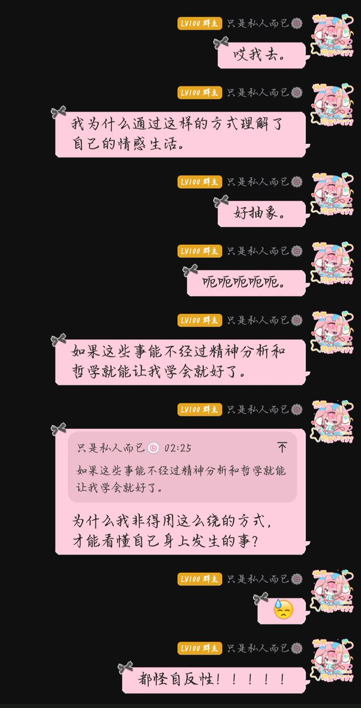

只是私人而已🍥。
@ansiyao520
精神分析和哲学不是我的爱好，它们是我被迫使用的工具。因为我的情感模式本身已经太绕了——我的痛苦不是直接的痛，而是痛的同时还在分析自己为什么痛；我的焦虑不是单纯的焦虑，而是对焦虑本身的焦虑。我要理解自己，就不得不站到自己的外面，用一个更冷的语言来描述自己里面正在进行的东西。
从来没有觉得学精神分析开心过。
自反性是我的精神病。
之一。
我终于解锁对“自己到底是什么样的精神病”这件事的第一块拼图了。
就是自反性。我自反性太严重了。
